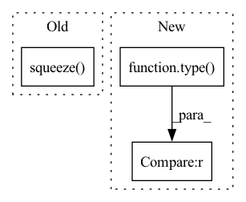

Pattern ID :13238
Before Change
itemgetter("action_scaled", "log_prob")(self.policy_network.sample(state, deterministic))
return {
"action":action_scaled.cpu().squeeze() .numpy()[0],
"log_prob": log_prob.cpu().numpy()[0]
}After Change
if len(obs.shape) == 1:
ret_single = True
obs = [obs]
if type(obs) != torch.tensor :
obs = torch.FloatTensor(np.array(obs)).to(util.device)
action, log_prob = itemgetter("action_scaled", "log_prob")(self.policy_network.sample(obs, deterministic=deterministic))
if ret_single:In pattern: SUPERPATTERN
Frequency: 3
Non-data size: 3
Instances Fragment ID: 44642771
Project Name: x35f/unstable_baselines
Commit Name: fd650918d0f96ab53625afed362025e5a53c10a6
Time: 2022-06-13
Author: 1621322691@qq.com
File Name: unstable_baselines/baselines/sac/agent.py
M Class Name: SACAgent
N Class Name: SACAgent
M Method Name: select_action(3)
N Method Name: select_action(3)
M Parent Class: BaseAgent,torch.nn.Module
N Parent Class: BaseAgent,torch.nn.Module
M File Name: unstable_baselines/baselines/sac/agent.py
N File Name: unstable_baselines/baselines/sac/agent.py
M Start Line: 148
M End Line: 158
N Start Line: 140
N End Line: 152
Before Change
am = input.argmax(axis=axis)
am = np.expand_dims(am, axis=axis) if axis is not None else np.array([am])
ctx.save_for_backward(input.shape, am, axis)
return np.take_along_axis(input, am, axis=axis).squeeze(axis=axis)
@staticmethod
def backward(ctx, grad_output):
shape, am, axis = ctx.saved_tensorsAfter Change
class Max(Function):
@staticmethod
def forward(ctx, inp, axis=None):
axis = [axis] if type(axis) == int else axis
ret = np.amax(inp, axis=None if axis is None else tuple(axis), keepdims=True)
ctx.save_for_backward(inp, axis, ret)
if axis is not None: Fragment ID: 44642770
Project Name: geohot/tinygrad
Commit Name: e2f833f58fa165aabae3b587cb84733eadcbd490
Time: 2020-12-30
Author: 65973015+marcelbischoff@users.noreply.github.com
File Name: tinygrad/ops_cpu.py
M Class Name: Max
N Class Name: Max
M Method Name: forward(3)
N Method Name: forward(3)
M Parent Class: Function
N Parent Class: Function
M File Name: tinygrad/ops_cpu.py
N File Name: tinygrad/ops_cpu.py
M Start Line: 119
M End Line: 122
N Start Line: 119
N End Line: 124
Before Change
(time, batch), chw = obs_size[:2], obs_size[2:]
observation = observation.view(time * batch, *chw)
conv_features = cnn(observation).squeeze(-1).squeeze( -1)
if with_time:
// noinspection PyUnboundLocalVariable
conv_features = conv_features.view(time, batch, -1)
After Change
def cnn_forward(cnn, observation):
if type(observation) is dict :
img = observation.pop("img")
else:
img = observation Fragment ID: 44642773
Project Name: cherrypiesexy/imitation_learning
Commit Name: 998cc46be20ad6a3824f9bb6677b8d7daefc3cbb
Time: 2021-01-02
Author: interga@post-hardcore.ru
File Name: algorithms/nn/conv_encoders.py
M Class Name: AnonimousClass
N Class Name: AnonimousClass
M Method Name: cnn_forward(2)
N Method Name: cnn_forward(2)
M Parent Class:
N Parent Class:
M File Name: algorithms/nn/conv_encoders.py
N File Name: algorithms/nn/conv_encoders.py
M Start Line: 12
M End Line: 14
N Start Line: 8
N End Line: 30